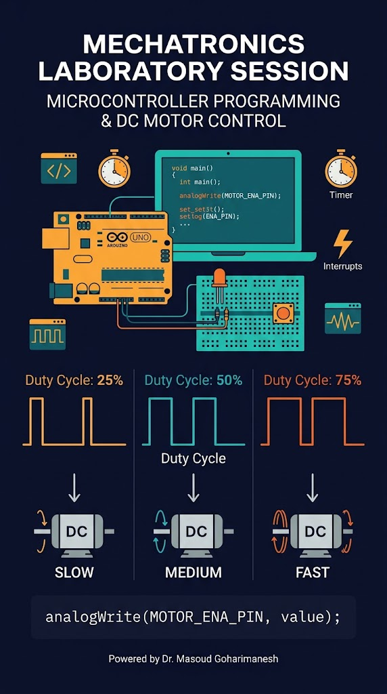
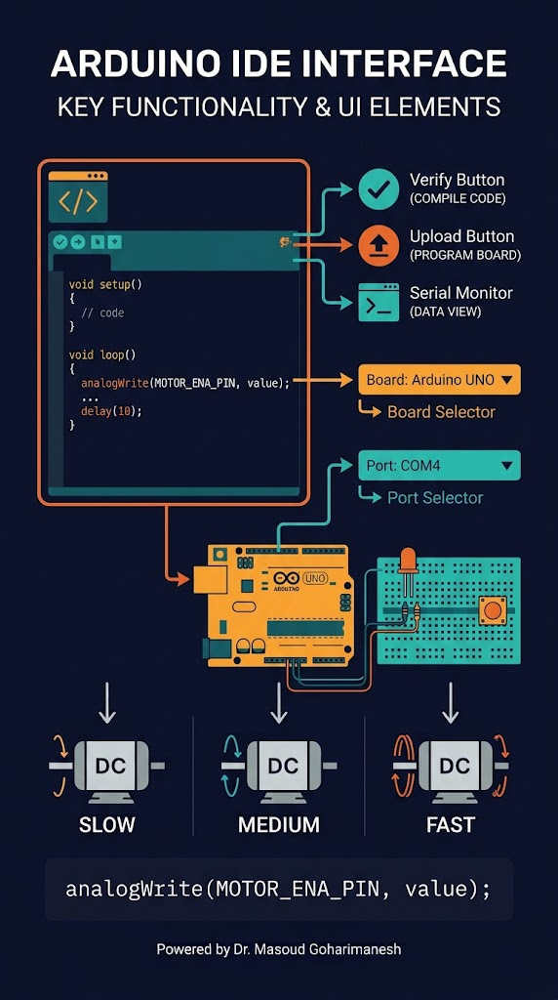
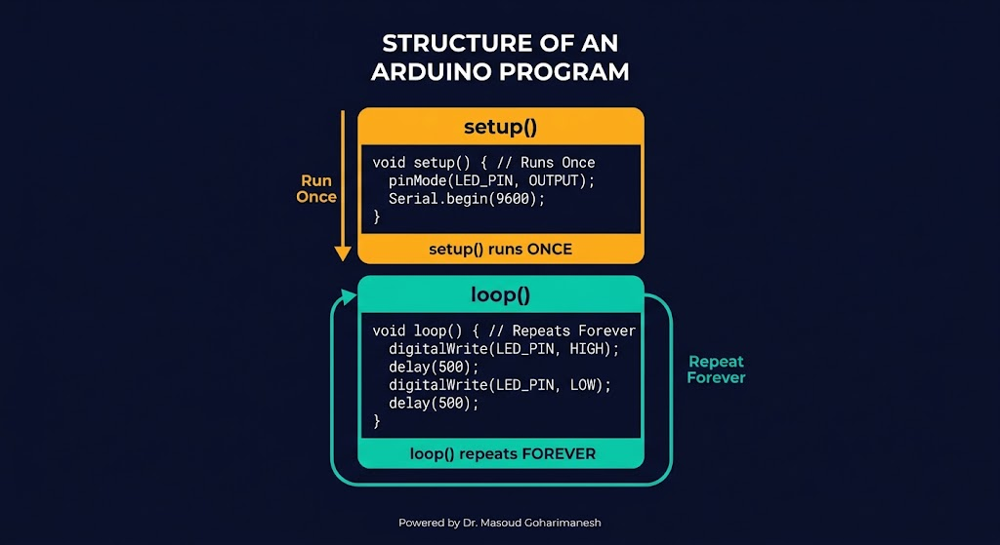
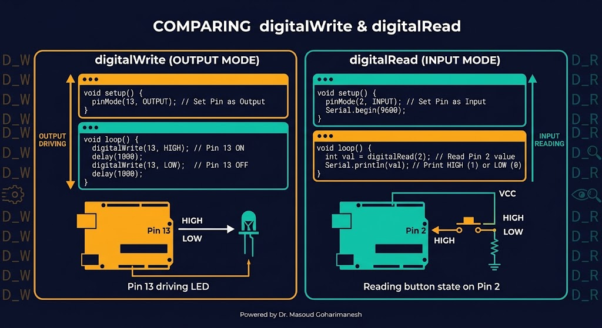
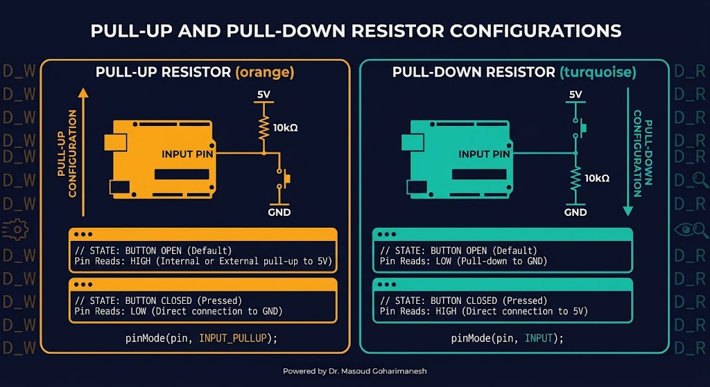
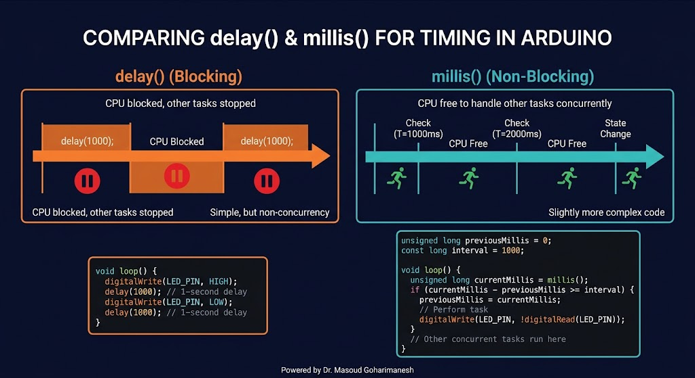
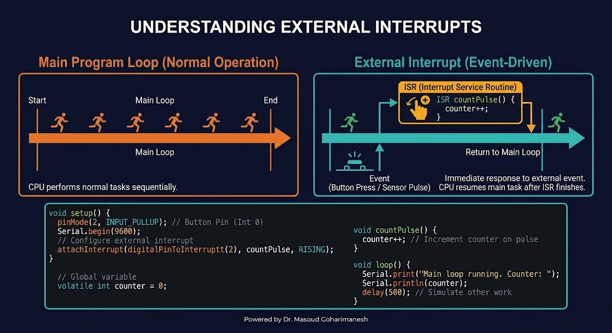
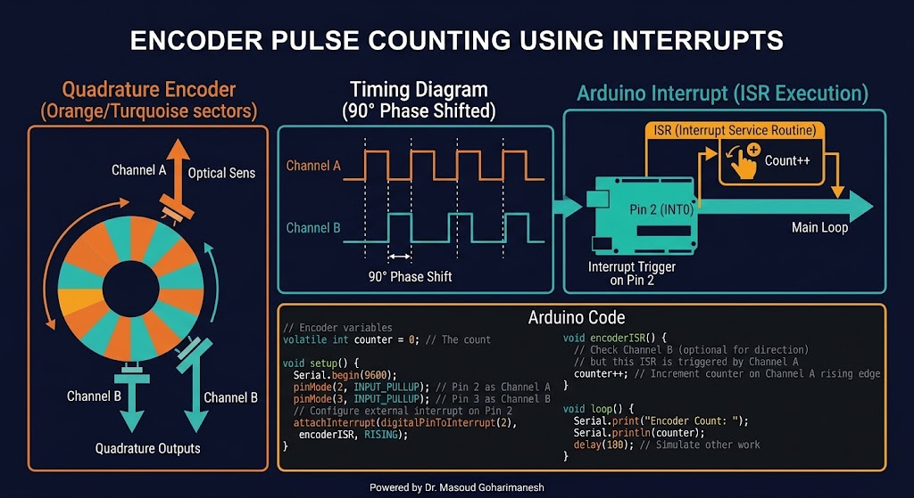

بخش اول: دیجیتال، تایمر، وقفه
دکتر مسعود گوهریمنش
دانشیار گروه مهندسی مکانیک
دانشگاه تربت حیدریه | پاییز ۱۴۰۵
یک میکروکنترلر بدون برنامه، فقط یک تراشه است!
تفاوت delay() و millis() چیست؟ چرا در رباتهای واقعی از millis() استفاده میشود؟
اولین قدم برای برنامهنویسی

setup() و loop()

یک بار در ابتدا اجرا میشود. برای تنظیمات اولیه.
void setup() {
pinMode(13, OUTPUT);
Serial.begin(9600);
}
بهطور بینهایت تکرار میشود. برنامه اصلی.
void loop() {
digitalWrite(13, HIGH);
delay(500);
digitalWrite(13, LOW);
delay(500);
}
کنترل LED، رله، بازر

#define LED_PIN 13
void setup() {
pinMode(LED_PIN, OUTPUT);
}
void loop() {
digitalWrite(LED_PIN, HIGH); // روشن
delay(1000);
digitalWrite(LED_PIN, LOW); // خاموش
delay(1000);
}
خواندن دکمه، سنسور دیجیتال
#define BUTTON_PIN 2
#define LED_PIN 13
void setup() {
pinMode(BUTTON_PIN, INPUT_PULLUP);
pinMode(LED_PIN, OUTPUT);
}
void loop() {
int state = digitalRead(BUTTON_PIN);
if (state == LOW) { // دکمه فشرده
digitalWrite(LED_PIN, HIGH);
} else {
digitalWrite(LED_PIN, LOW);
}
}
تثبیت ورودی

مقاومت به ۵V، دکمه به GND. در حالت آزاد، ورودی HIGH. با فشار، LOW.
مقاومت به GND، دکمه به ۵V. در حالت آزاد، ورودی LOW. با فشار، HIGH.
نکته: در آردینو، برای دکمهها معمولاً از INPUT_PULLUP داخلی استفاده میشود.
چرا millis() بهتر است؟

unsigned long lastTime = 0;
bool ledState = false;
void loop() {
unsigned long now = millis();
if (now - lastTime >= 1000) {
lastTime = now;
ledState = !ledState;
digitalWrite(LED_PIN, ledState);
}
// کارهای دیگر بدون توقف...
readSensors();
updateControl();
}
واکنش فوری به رویداد

بدون وقفه، برای خواندن دکمه باید مرتباً آن را چک کنیم (Polling). با وقفه، بهمحض فشردن دکمه، برنامه اصلی متوقف شده و تابع ISR اجرا میشود. سپس برنامه اصلی ادامه مییابد.
پینهای ۲ و ۳ در آردینو UNO
#define BUTTON_PIN 2
#define LED_PIN 13
volatile bool buttonPressed = false;
void buttonISR() {
buttonPressed = true;
}
void setup() {
pinMode(BUTTON_PIN, INPUT_PULLUP);
pinMode(LED_PIN, OUTPUT);
attachInterrupt(
digitalPinToInterrupt(BUTTON_PIN),
buttonISR,
FALLING
);
}
void loop() {
if (buttonPressed) {
buttonPressed = false;
digitalWrite(LED_PIN, !digitalRead(LED_PIN));
}
}
دقیقترین روش اندازهگیری سرعت

volatile long pulseCount = 0;
#define ENCODER_PIN 2
#define PPR 20 // پالس در دور
void countPulse() {
pulseCount++;
}
void setup() {
Serial.begin(9600);
pinMode(ENCODER_PIN, INPUT_PULLUP);
attachInterrupt(digitalPinToInterrupt(ENCODER_PIN), countPulse, RISING);
}
void loop() {
static unsigned long lastTime = 0;
unsigned long now = millis();
if (now - lastTime >= 1000) {
float rpm = (pulseCount * 60.0) / PPR;
Serial.print("RPM: ");
Serial.println(rpm);
pulseCount = 0;
lastTime = now;
}
}
زمانبندی داخلی
مثال: برای اندازهگیری پهنای پالس: unsigned long start = micros(); ... unsigned long elapsed = micros() - start;
ترکیب دیجیتال، تایمر، وقفه
#define LED_PIN 13
#define BUTTON_PIN 2
volatile bool toggled = false;
bool ledState = false;
void buttonISR() {
toggled = true;
}
void setup() {
Serial.begin(9600);
pinMode(LED_PIN, OUTPUT);
pinMode(BUTTON_PIN, INPUT_PULLUP);
attachInterrupt(digitalPinToInterrupt(BUTTON_PIN), buttonISR, FALLING);
}
void loop() {
if (toggled) {
toggled = false;
ledState = !ledState;
digitalWrite(LED_PIN, ledState);
}
static unsigned long lastPrint = 0;
if (millis() - lastPrint >= 1000) {
lastPrint = millis();
Serial.print("LED: ");
Serial.println(ledState ? "ON" : "OFF");
}
}
چشمکزن با دکمه و وقفه
روی دکمه کلیک کنید تا وقفه فراخوانی شود و LED تغییر وضعیت دهد.
جلسه بیستم - برنامهنویسی (بخش اول)
نکات کلیدی جلسه بیستم
جلسه بعد: برنامهنویسی میکروکنترلر (بخش دوم) — آنالوگ، سریال، ماشین حالت
Powered by Dr. Masoud Goharimanesh